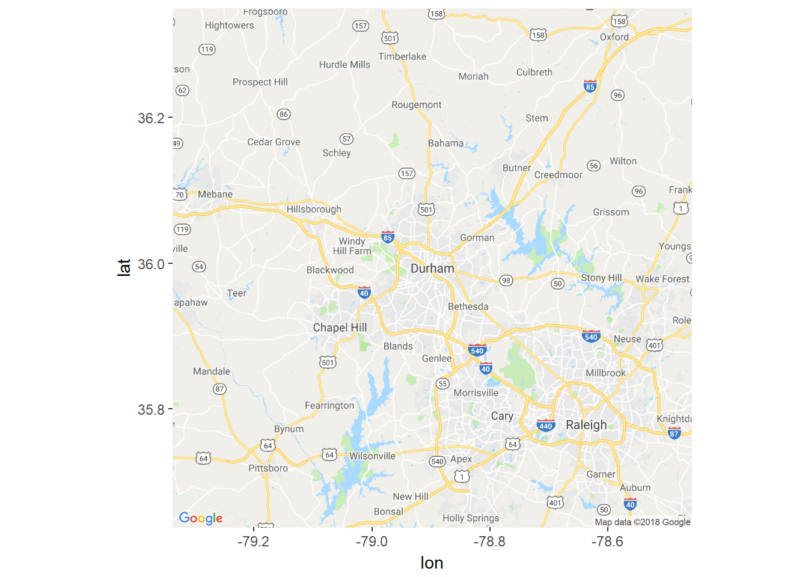
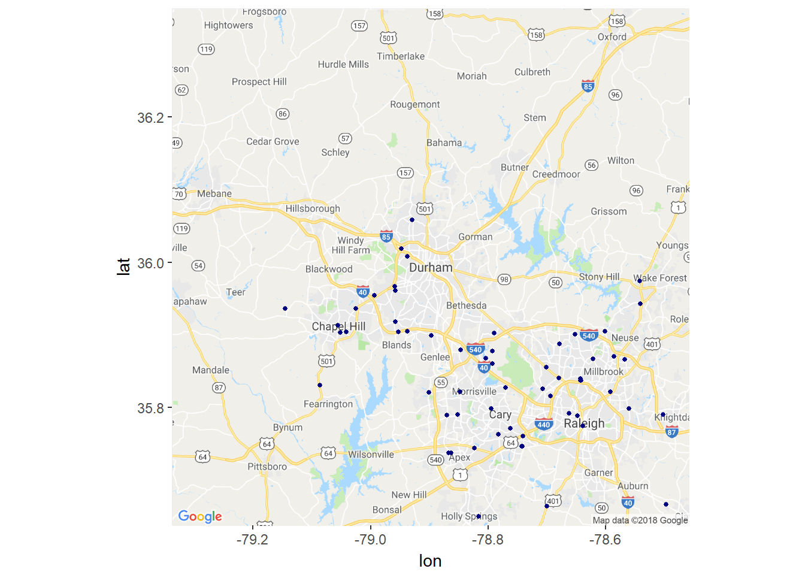
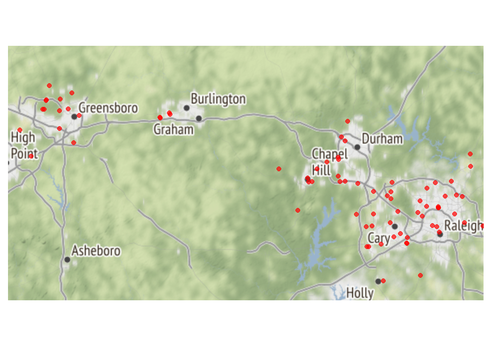

ggmap – Latitude and Longitude Coordinates
In this example, build a static map quickly and easily using ggmap. The ggmap package enables the integration of popular raster base-maps with ggplot2 syntax. This example
Load Packages
library(tidyverse)
library(ggmap)Load Data
2012 Starbucks locations
starbucks <- read_csv("data/All_Starbucks_Locations_in_the_US_-_Map.csv")Subset Data to North Carolina
Using the same Starbucks from the previous example…
starbucksNC <- starbucks %>%
filter(State == "NC")ggmap
Indentify base map and mapping location
Some of the most popular base maps come from the Google Maps source. Using ggmap, the following map types are available from the Google Maps source …
- terrain
- satellite
- roadmap
- hybrid
get_local_spot <- get_map("Durham North Carolina", maptype = "roadmap", zoom = 10) Alternatively, use help(get_map) to identify additional map sources and other arguments for maptype. For example…
- Stamen maps: “terrain”, “watercolor”, and “toner”
- or a positive integer for cloudmade maps (see ?get_cloudmademap)
Display Base Map
ggmap(get_local_spot)
Display points with geom_point
ggmap(get_local_spot) +
geom_point(data = starbucksNC, aes(x = Longitude, y = Latitude), color = "navy", size = 1)
Frame the Map
Altering the map frame from a square to a rectangle requires knowing the coordinates of the Southwest and Northeast corners of the map frame. This time, display a different basemap using the the Stamen source and the Toner maptype.
mapbox <- c(-80, 35.6, -78.5, 36.25)
piedmont_coffee <- get_map(location = mapbox, source = "stamen", maptype = "toner", zoom = 9)ggmap(piedmont_coffee)
Plot Coffee Shops
ggplot2 syntax comes in handy for creating various map views.
ggmap(piedmont_coffee) +
geom_point(data = starbucksNC,
aes(x = Longitude, y = Latitude),
color = "red",
size = 2,
alpha = 0.7) +
theme(axis.text.x = element_blank(),
axis.text.y = element_blank(),
axis.ticks = element_blank(),
rect = element_blank(),
axis.title.y=element_blank(),
axis.title.x=element_blank())